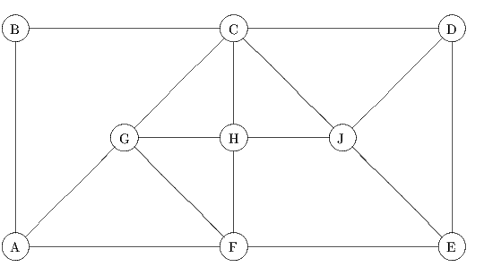

Due: Thursday, March 4, 2021, by end of day.
Penalty for late homeworks: 10% for each day or part of a day.
The following graph G = (V,E) is used in question 1.

Show that the valid constraint t1 + t2 ≥ 1 has Chvatal rank equal to 2.
where x3 and x4 are the slack variables in the two constraints. Find the Gomory and strong Gomory cutting planes implied by the two constraints. Express these constraints in terms of the original variables x1 and x2 and draw them on a graph of the feasible region.
Show that the constraint ∑ i=1nxi ≥ n - 1 is valid. Give a fractional point with 0 ≤ x ≤ e that satisfies the original n(n- 1)∕2 constraints but violates the new constraint. Show that the new constraint has Chvatal rank no larger than O(log n).
The initial model contains only the adjacency constraint that just one endpoint of an edge can appear in the node packing. Pick a seed and then solve the problem using a cutting plane algorithm:
(It is highly likely that you will need to use both clique inequalities and odd hole inequalities, and that these inequalities will be sufficient to solve the problem.)
(Hint: The graph consists of the cycle 1 - 2 - 3 - 4 -…- 14 - 15 - 1, plus some extra edges. You might be able to see the structure by displaying adjacency.)
| John Mitchell |
| Amos Eaton 325 |
| x6915. |
| mitchj at rpi dot edu |
| Office hours: Monday and Thursday 1pm–2pm. |
| webex: https://rensselaer.webex.com/meet/mitchj |